9 月 9 日至 13 日，以“全球服务、互惠共享”为主题的 2026 年中国国际服务贸易交易会（下称“服贸会”）在北京首钢园举行。作为世界贸易中心协会（WTCA）在新加坡的官方授权成员，新加坡世界贸易中心（WTC Singapore）以“连接资本、创新与全球市场”为主题深度参展。9 月 10 日至 13 日，一场品牌活动、一场生态伙伴签约、两场圆桌对话、一份研究报告接连落地，并在展期最后两日持续与全球世贸中心伙伴面对面交流——从“出海第一站”到“全球生态”，新加坡世贸以高频、高密度的节奏，为本届服贸会之旅画上圆满句号。
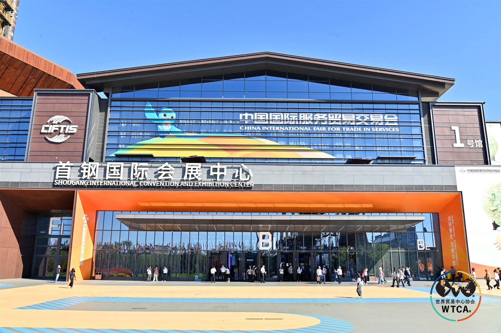
01 展期全程：新加坡世贸的服贸会“时刻表”
本届服贸会吸引 1830 余家企业参展，并首次设置“出海专区”。作为 WTCA 全球网络的重要节点，新加坡世贸中心的服贸会日程紧凑而充实：
9 月 10 日｜WTCA 主展区“植根自贸、链接全球”主题品牌活动，全球自贸区服务伙伴集体亮相，两大国际合作成果同步发布；
9 月 11 日｜“东南亚为枢纽·AI 与出海 驱动企业增长”圆桌对话；
9 月 11 日｜“侨联搭桥·世贸通衢——生命健康产业的全球化路径与生态构建”圆桌对话；
9 月 11 日｜《中国新能源电力电气出海研究报告》全球首发仪式。
9 月 11 日｜“共信共福·千帆共济”中国企业走出去论坛，张克理事长代表新加坡世界贸易中心完成“走出去全球生态合作伙伴”签约；
9 月 12—13 日｜持续在 WTCA 专区与来自全球各城市的世界贸易中心伙伴及参展机构面对面交流。
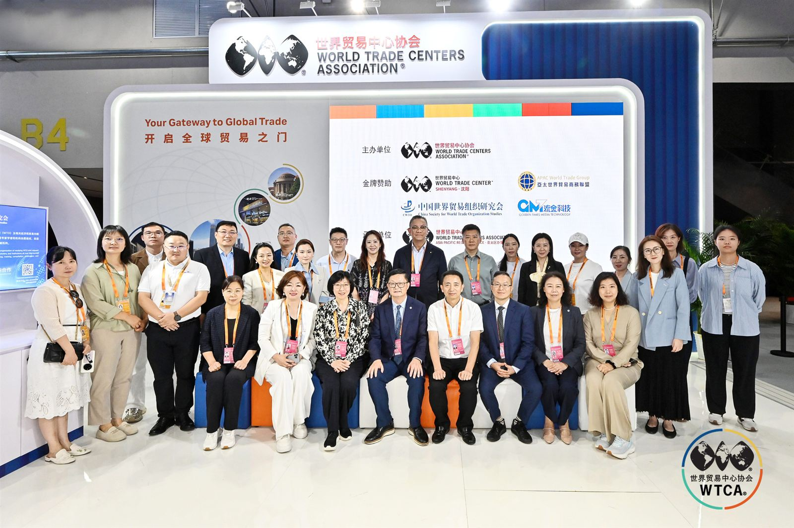
此外，9 月 10 日，新加坡世贸中心理事长张克出席“多边贸易体制与全球贸易网络建设国际研讨会”；WTCA 亚太区商贸委员会主席、新加坡世贸中心首席代表兼执行总裁朱小兰出席“中国企业国际合规论坛”，围绕企业国际化合规展开交流。
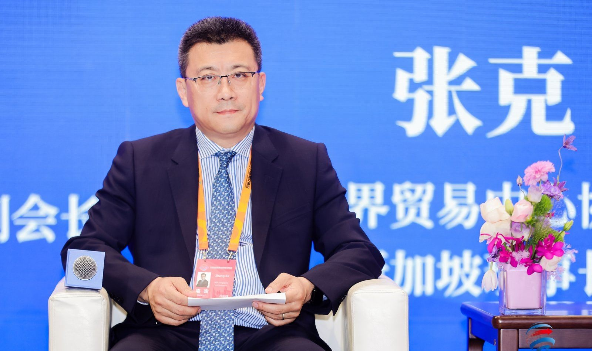
02 9 月 10 日｜植根自贸、链接全球：全球自贸区服务伙伴集体亮相
9 月 10 日下午，“植根自贸、链接全球”主题品牌活动在 WTCA 主展区举行。活动由 WTCA 亚太区商贸委员会牵头，联动新加坡、重庆两地世贸中心，携手海南、上海自贸区优质服务机构共同举办。新加坡世贸中心首席代表兼执行总裁朱小兰在致辞中向现场企业界发出邀请：“当中国企业规划全球布局时，新加坡世贸中心愿成为出海的‘第一站’。”
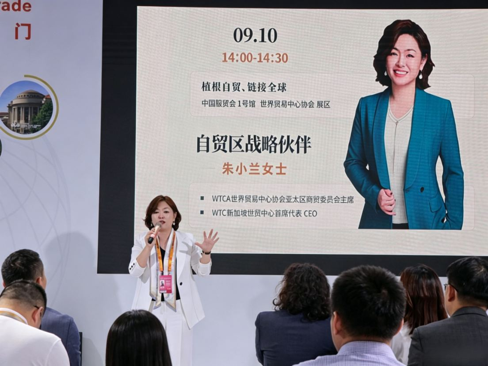
她表示，WTCA 网络覆盖全球 95 余个国家和地区、320 余座城市，连接超过 75 万家关联企业，是全球最具影响力的商贸服务平台之一。依托新加坡作为东盟金融与贸易枢纽的区位优势，新加坡世贸中心将通过 WTC ONE Club 国际商务俱乐部、GlobalX 出海加速器、WTC Fund 创新资本生态三大核心业务，为企业出海提供市场进入、合规落地与本地化运营的一站式服务，打通东盟与中国双向通道。

活动现场，WTC 新加坡与 WTC 重庆举行联合授旗仪式，正式建立战略合作伙伴关系——新加坡作为东盟金融与贸易枢纽、重庆作为西部陆海新通道核心节点，互补优势将为两地企业搭建更高效的跨境服务桥梁。FTP 自贸第 1 站、长三角科创联盟、德雅方舟博鳌乐城等自贸区服务伙伴也先后分享实践，勾勒出从海南到上海、从博鳌乐城到西部陆海的合作图景。
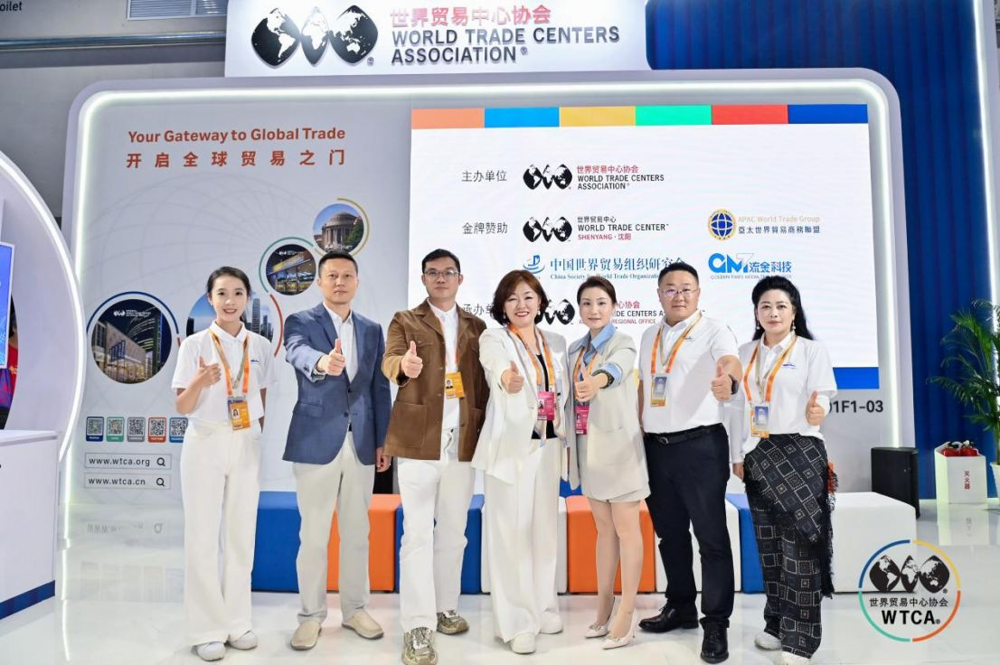
当天还发布两项重量级成果：其一，“全球自贸区健康产业联动机制”正式启动，由 WTCA 牵头，联合海南博鳌乐城、上海自贸区及全球多个自贸区健康服务机构共同发起，推动医疗技术交流、健康旅游互荐、产业资源共享与标准互认；其二，WTCA“百年品牌全球首店”正式落地海南三亚，将依托海南自贸港离岛免税政策与国际旅游消费中心定位，为国际百年品牌进入中国市场打造全新的展示与交易平台。
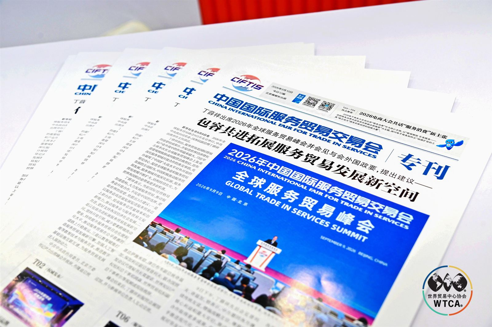
03 9 月 11 日｜两场圆桌：AI 与大健康，聚焦中国企业如何“走进去”
9 月 11 日，新加坡世贸中心秘书长兼首席运营官董立鑫在 WTCA 专属展区主持“东南亚为枢纽·AI 与出海 驱动企业增长”圆桌对话，来自科技、金融、产业与海外一线的四位嘉宾组成“科技—金融—产业—海外”对话阵容。
董立鑫提出：“AI 将不再只是出海企业的效率工具，而会重构企业选择市场、配置资本和搭建本地团队的底层逻辑——谁先把 AI 用在决策层，而不只是执行层，谁就能在东南亚这个枢纽上跑得更快。”

用友海外市场与生态总监蔡伟召指出，中国企业出海的真正共性瓶颈不是模型能力，而是国内外数据和业务系统没有打通，把“系统孤岛”连成网，AI 才能从执行层效率延伸到决策环节；宁波银行北京分行国际业务部总经理励宁分享“全球赢”服务体系，全行已累计服务出海企业超 1000 家；国联股份副总裁黄莎莎阐释产业互联网平台如何把中国产业带的集群优势转化为抱团出海的体系化竞争力；株式会社 NSR 社长名城悠真则从日本企业出海历史出发提醒：“AI 或许能降低企业进入一个市场所需的组织成本，但不会消除建立本地信任所需要的时间。”董立鑫总结道，AI 时代企业出海最终比拼的，是技术与资本、数据、产业、合规和本地信任体系的结合速度。

14:30，“侨联搭桥·世贸通衢——生命健康产业的全球化路径与生态构建”圆桌对话接续举行，来自侨联体系、海外服务网络、产业实践与科创一线的五位嘉宾展开深度交流，构成“侨联—产业—海外—平台”四维对话阵容。
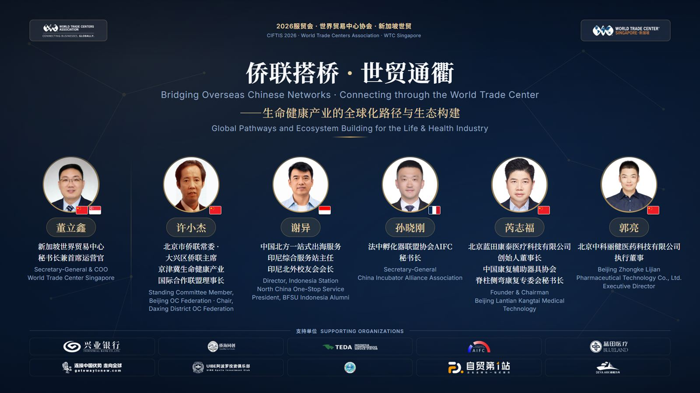
董立鑫在开场中提出核心判断：“大健康出海，产品只是入场券，真正的挑战是进入市场。”企业要真正进入一个陌生国家的医疗健康体系，需要跨过监管准入、市场信任与长期资本三道门，“侨联网络给信任，世贸网络给通道，资本市场给耐心，三者缺一不可”。
北京市侨联常委、大兴区侨联主席许小杰介绍，京津冀生命健康产业国际合作联盟已联动 80 余家海外服务站点、汇聚百余位侨商侨智；中国北方（泰达）一站式出海服务基地印尼综合服务站主任谢异与法中孵化器联盟协会（AIFC）秘书长孙晓刚，分别带来东南亚与欧洲市场的一线观察；蓝田康泰创始人芮志福、中科丽健执行董事郭亮则以产业实践印证：产品竞争力只是国际化的起点，真正的通行证是本地注册与信任建立。
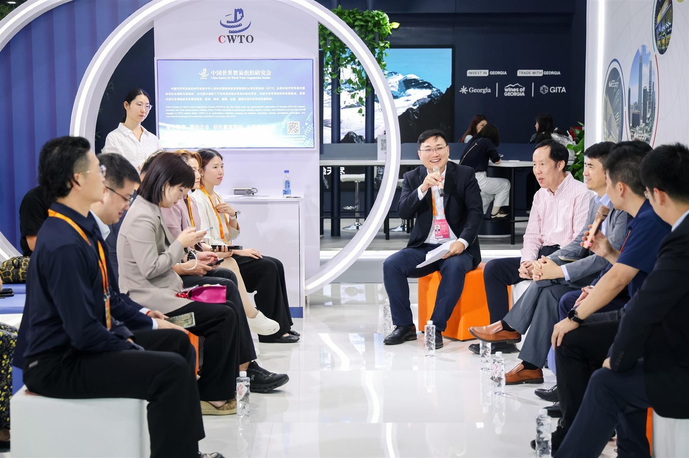
04 9 月 11 日｜《中国新能源电力电气出海研究报告》全球首发
当天，《中国新能源电力电气出海研究报告》全球首发仪式在 WTCA 专属展区举行。报告由新加坡世界贸易中心与和君咨询电力电气事业部联合发布，主题为“从产品出口到全球生态”，围绕中国新能源电力电气产业全球化发展的路径、市场格局与趋势展开系统研究。
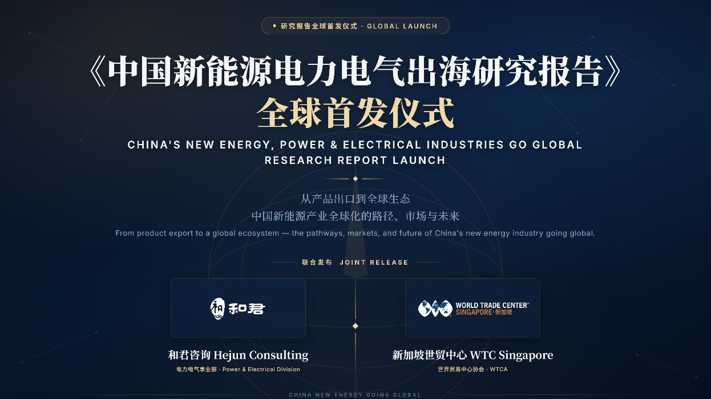
报告指出，产品进入海外市场只是国际化经营的起点。从“产品出海”走向“能力出海”、再走向“生态出海”，企业需要逐步完成从出口业务向全球化经营的转变，国际化竞争的核心正从单一产品能力向综合经营能力延伸。此次联合发布，是产业研究与国际网络的一次结合：一方面从产业视角梳理中国新能源电力电气企业国际化发展的实践与趋势，另一方面通过 WTCA 全球网络，加强中国企业与海外市场、产业伙伴之间的信息与资源连接，为企业校准国际化战略、打开增量市场提供决策参考。
05 9 月 11 日｜共信共福、千帆共济：新加坡世界贸易中心受邀全球生态伙伴签约
9 月 11 日下午，“共信共福·千帆共济”——2026 中国企业走出去论坛暨走出去综合服务生态伙伴大会举行。新加坡世界贸易中心理事长、贝克资本集团董事长张克受邀出席，并代表新加坡世界贸易中心完成“走出去全球生态合作伙伴”签约，将 WTCA 全球商业网络进一步接入中国企业出海服务体系。
在“服务贸易企业走出去发展趋势”高端对话中，张克分享了对中国服务贸易企业出海的观察。他指出，随着全球贸易从货物流转向资本、创新与市场的深度结合，企业国际化需要更快、更广泛地建立可信任的链接。“信任是根本。”依托 WTCA 覆盖全球 95 余个国家和地区、320 余座城市的网络，与其从零搭建海外网络，不如“以网络对接网络”，帮助中国企业更高效地连接全球市场。

06 9 月 12—13 日｜链接全球：与世界贸易中心伙伴面对面交流
9 月 12 日至 13 日，新加坡世界贸易中心持续在服贸会 WTCA 专区与来自全球不同城市的世界贸易中心伙伴及参展机构深入交流。来自萨尔蒂约、济州以及中国各城市的世贸中心伙伴相继来到展区，围绕企业国际化、跨境资源链接与全球商贸合作等话题展开交流，在面对面沟通中进一步拓展合作网络。
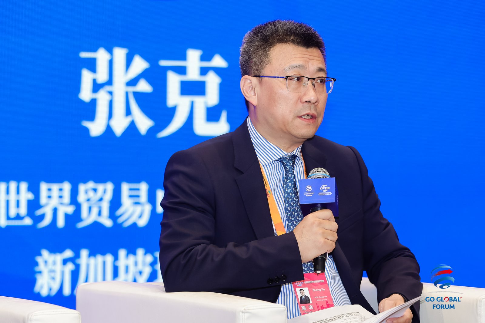
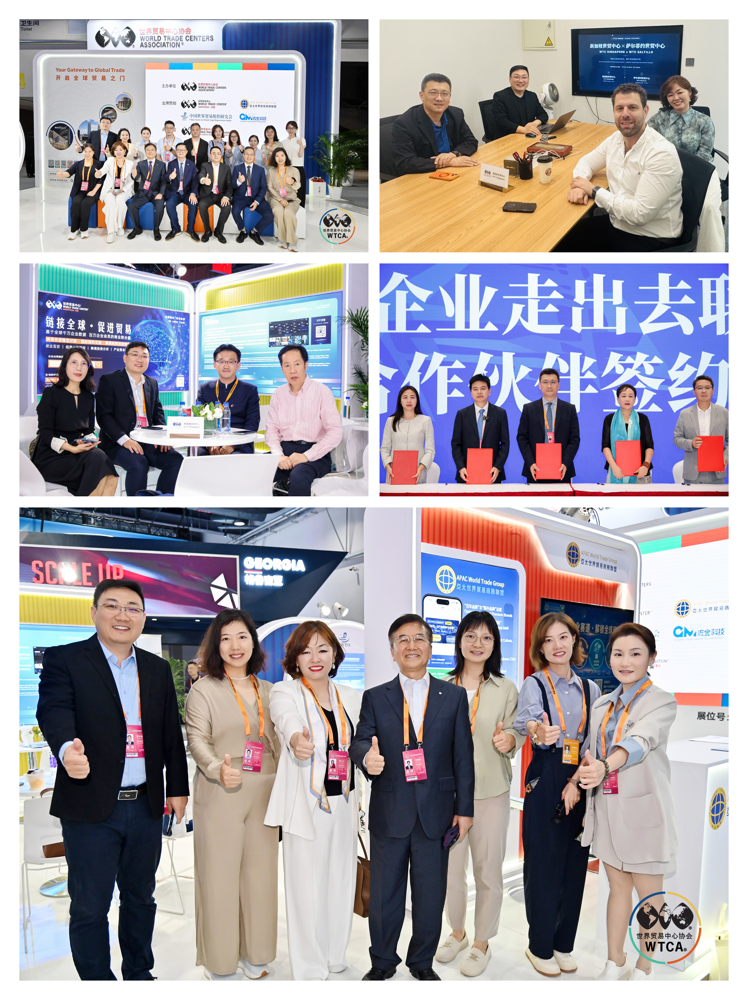
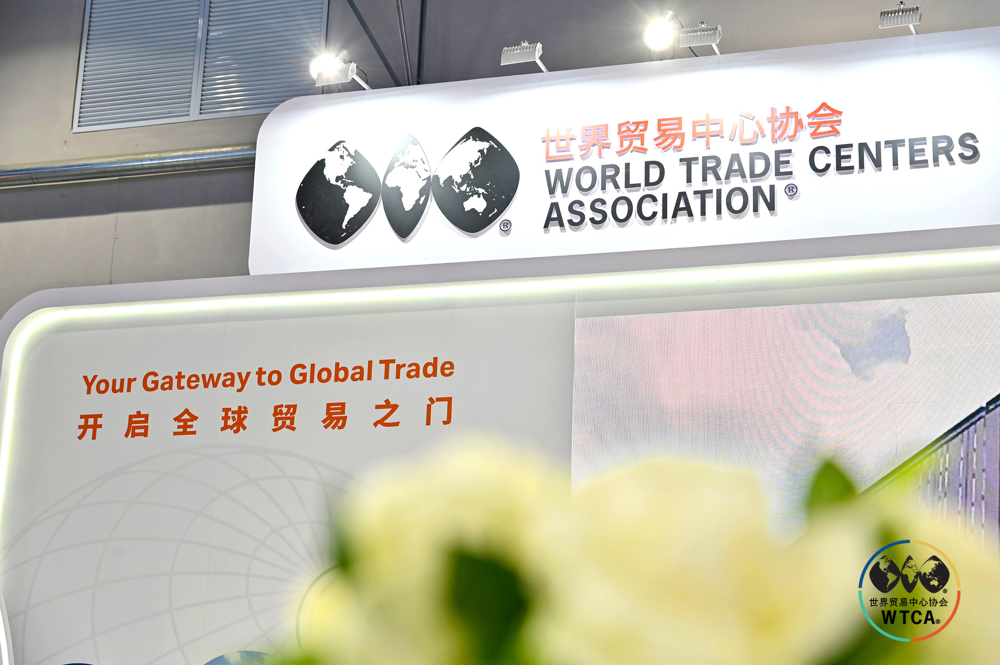

从中国到东南亚，从亚洲到全球，服贸会不仅是展示与发布的平台，也成为世界贸易中心网络伙伴彼此连接的重要节点。新加坡世贸中心借助这一平台，与来自全球各地的企业、机构及世贸中心伙伴建立更多直接联系，让一场展会从“相遇”走向“持续连接”，也让中国企业通往全球市场的网络更加立体。
07 收官不是终点：“第一站”之后，链接全球才刚刚开始
从 9 月 10 日全球自贸区伙伴集体亮相，到 9 月 12—13 日与全球世贸中心伙伴面对面交流，新加坡世贸中心以高频、高密度的节奏，贯穿展期全程，完成了从“品牌亮相”到“持续连接”的完整表达。系列活动背后是同一套逻辑：以 WTCA 全球网络为底座，以资本、信任、通道为支撑，为中国企业“引进来”“走出去”提供更广阔的合作空间。
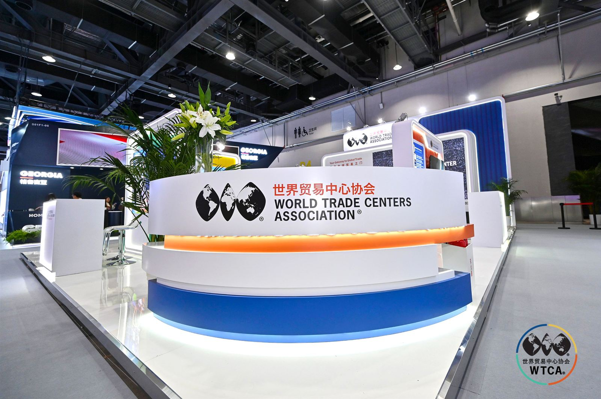
出海的“第一站”已经就位，链接全球的路，才刚刚开始。下一站，新加坡世贸中心与您同行。
08 关于 WTC Singapore
关于世界贸易中心协会（WTCA）：世界贸易中心协会（World Trade Centers Association，WTCA）成立于 1970 年，是非营利、非政治性的全球商贸组织，总部位于美国纽约，网络覆盖全球近 100 个国家和地区、300 多个世界贸易中心，致力于促进国际贸易与投资合作，为企业建立跨境商业连接、拓展国际市场提供网络支持。
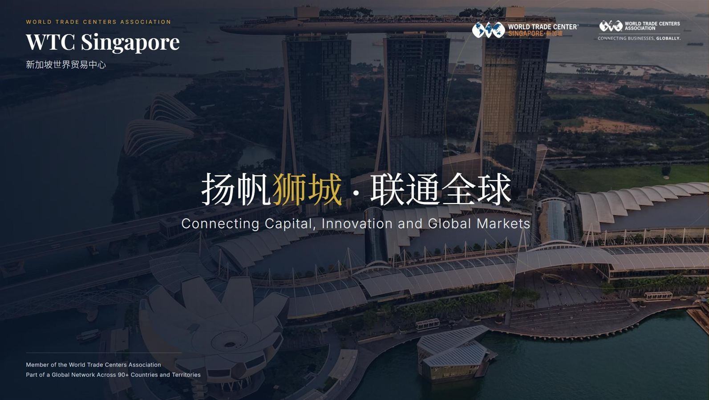
关于新加坡世界贸易中心（WTC Singapore）：新加坡世界贸易中心是世界贸易中心协会（WTCA）在新加坡的官方授权成员，依托 WTC ONE Club、GlobalX、WTC Fund 三大业务板块，致力于连接全球资本、创新资源与市场机会，为企业提供跨境资源对接与全球化落地支持。